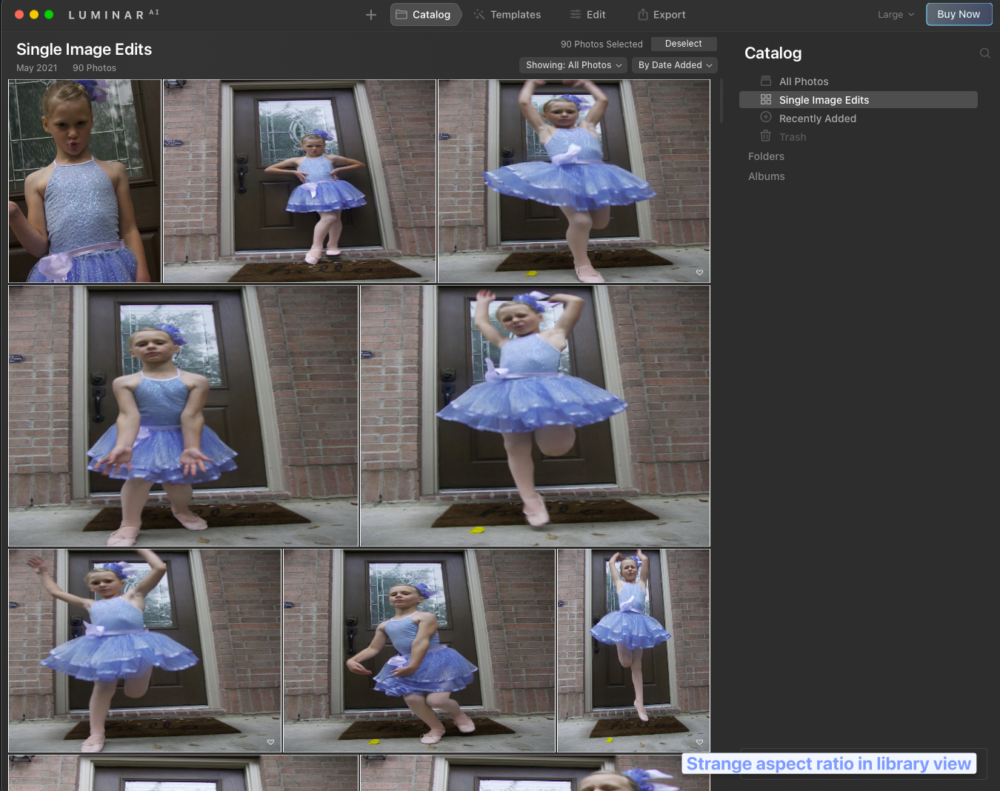

{{< admonition type="Note" title="Update" open="true">}}
Customer service bumped my older version of Luminar 3 to 4.
The issues with distortion on the preview screen aren't there with version 4.
The new AI enhancements aren't there, so it's missing some of the new features.
For now I'm going to try and use this as my daily driver for images and see how it goes.
Positive experience so far, though I still miss the fluid experience of Lightroom's preview modes.
{{< /admonition >}}
None. 😀
I'm a software engineer working with AWS mostly.
I'd be considered a "prosumer" with video and photography, in that I use high quality gear when possible, have comfort with professional video editing software, and have used Photoshop, Lightroom, Gimp, and other tools of a similar nature.
This is a quick review from someone who found Lightroom to overall a freeing experiencing in photography workflow.
For my occasional usage, I'm not excited to pay the subscription fee, so my Lightroom 6 standalone license is all I've continued with.
- Casual impressions only.
- This is not in-depth review from a photography specialist.
-
My focus is:
- user experience
- application stability
- lock-in
- library management (the one thing Lightroom seems to do better than any other app I've tried)
The very first look of the library view was pretty bad.
I'm not certain what's going on, but the raw file previews in the library view loaded in a way that made my daughter look like she was being viewed through one of those warping mirrors.

The library management workflow was pretty snappy, so I was overall happy with that.
I do miss Lightroom Survey view, but no other app has had that kind of compare interface that I've discovered so far.
The template presets for portrait did well out of the gate.
I was even able to enhance the eyes and change the color of the eyes completely with a few clicks.
A few preset adjustments such as "Face AI" allowed editing the light on the face to help brighten just the face without any need to mask.
🔳 Many of the AI powered tools were gimmicky to me.
🔳 Mystical, Glow, Dramatic, all tended to be pretty over the top when max, though perhaps a little touch of each might work.
✅ The composition auto leveler was nice.
✅ Enhance tool was subtle and tasteful
✅ The ability to apply a preset then jump tweaking the presets applied changes was intuitive and well done.
✅ The erase tool did great at removing a sign from a brick wall with seconds of effort.
Overall good quick intuitive workflow.
Value propisition is more difficult to determine.
I had Luminar 2018 and Luminar 3. Both weren't a great experience on the PC and never really got much value from them.
I could see this being a viable raw editing workflow for me though, considering the overall license cost would be significantly less than many other competitors.